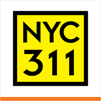
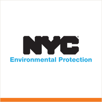
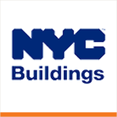

The district
 City Council
City Council State Assembly
State Assembly State Senate
State Senate Congress
Congress Subway
Subway Citi Bike
Citi Bike NYC Ferry
NYC FerryTurn layers on and off. Tap an official's logo or a board's seal for its page. Zoning and land use lot by lot are on the land use map.
About
Brooklyn Community District 6 encompasses Carroll Gardens, Cobble Hill, Columbia Waterfront, Gowanus, Park Slope, Red Hook. Covering 3.1 square miles and home to more than 100,000 residents, it runs from the East River and Upper New York Bay inland toward Prospect Park.
The district combines historic brownstone neighborhoods, active industrial areas, public housing, maritime uses, commercial corridors, and the Gowanus Canal. It is residential in much of its daily life, but the waterfront, Red Hook, and Gowanus give it a land use mix that is broader than a simple brownstone district.
Brooklyn CB6 in numbers


U.S. Census Bureau, American Community Survey 2019-2023 5-year estimates.
Contact
Chairperson
Eric McClure
District Manager
Mike Racioppo
District office
250 Baltic Street, Brooklyn, NY 11201
Meetings
Around you in Brooklyn CB6
Who represents Brooklyn CB6 Block cards: parking, trash, poll site, subway
Block cards: parking, trash, poll site, subway Parks, playgrounds, fields and courts
Parks, playgrounds, fields and courts
311, crime, tickets and permitsTransportation: streets, transit, bikes
Weather, flood maps and alertsLand use and zoning charts Zoning explained: what you can build, how review worksHealth profile
Zoning explained: what you can build, how review worksHealth profile
Every lot: zoning, owner, what is built